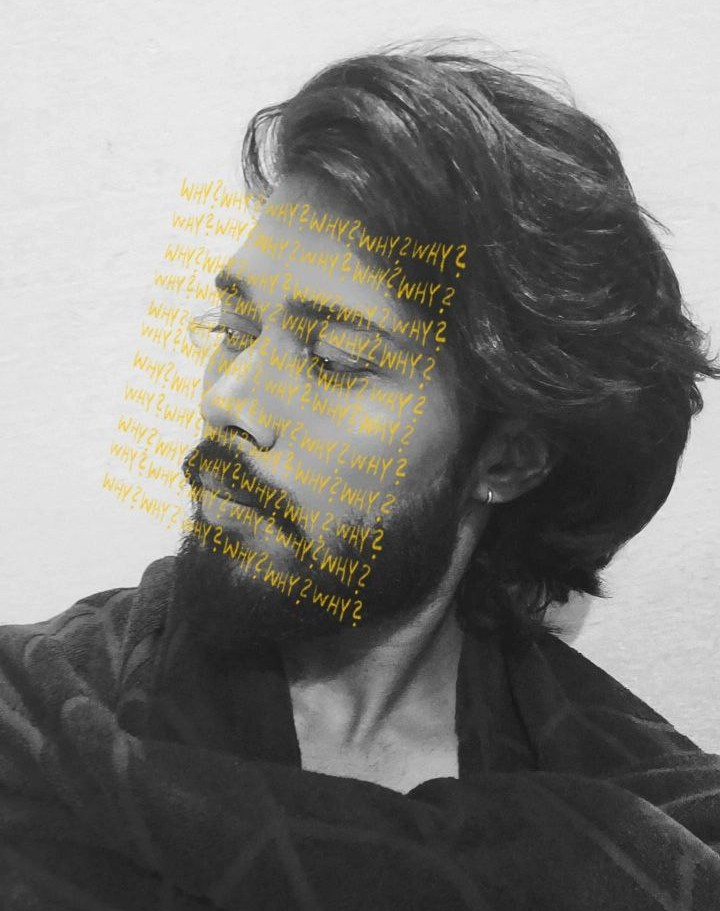

An AI answer is only useful if you can trust it. I build AI that answers business questions from a company's own data, checks every number before showing it, and is tested thoroughly before anyone relies on it.
Looks through the company's data for what holds the answer.
Builds the answer safely
Follows fixed rules and access controls, so nothing is made up and people only see what they're allowed to.
Draws the chart
NorthWestEastSouth
Checks every number
4 of 4 numbers in the answer match the data.
An illustrative example
Selected work
An AI analyst for business teams
Ask a question in plain English and get a chart or dashboard you can trust.
I led it end to end, from the AI behind it to the screen people use and the testing that proves it works.
1Ask a question
2Find the right data
3Build the answer safely
4Check every number
5Show a chart or dashboard
Answers you can trust
The AI never gets to improvise the final answer. It decides what's being asked, and fixed rules turn that into the result, so answers are consistent, secure and respect who is allowed to see what.
It checks its own work
Every number in an answer is checked against the data before it's shown, so a made-up figure is caught before anyone sees it.
It asks when it isn't sure
If a question could mean more than one thing, it asks, with suggested answers to pick from, instead of guessing.
It explains itself
People can see each step the AI took to reach an answer, and re-check a saved answer later to confirm the figures still hold.
It works with any AI model
Switching to a different AI model is a setting, not a rebuild.
Teaching the AI a business
A workspace where data owners connect their company's data and describe it in business terms: what each table means, who owns it, and how things relate. The AI can only use a data set once it's been described and approved.
A conversation, not a query
Saved conversations that remember earlier questions, so people can follow up naturally. Answers arrive as charts, tables or full dashboards.
A no-code AI workbench
Build, run and monitor machine learning and generative AI without writing code.
Led and mentored a team of junior engineers.
Built the visual builder where people assemble machine learning and generative AI workflows by dragging and dropping steps.
Led a security upgrade that removed every critical vulnerability.
How I know it works
A demo that works once proves little. Before the AI analyst answers real questions, it has to pass these tests.
567 of 568correctness tests pass
Right answers, and safe refusals when someone tries to trick it.
1,429test questions with known answers
48kinds of tricky question, from vague to deliberately misleading
6kinds of business the questions come from
35findings reports, each explaining a lost answer and its fix
How I work
The same five habits run through everything I ship. Each one has evidence behind it.
1
Define what "right" looks like
Before building, I write down what a correct result is. For the AI analyst, that became 1,429 questions with known answers.
2
Plan for things going wrong
What happens when a question is unclear, when someone lacks access, when a check fails? The system should ask, refuse or explain, never guess.
3
Own it end to end
I take features from the system behind them to the screen people use, so nothing gets lost between teams.
4
Measure, then improve
I test, find where it fails, and write it up. That produced 35 findings reports, each tied to a fix.
5
Bring the team with me
I mentor junior engineers, break work down and review it through to delivery.
My journey
From studying computer science to leading AI products, with more responsibility at every step.
NuoData is the enterprise data and AI platform powered by NucleusTeq.
Where I learned to program and built my first web applications.
Certifications and awards
Certifications
Awards
What I can do
A dependable AI product has many layers. I've built every one of them myself.
AI products
AI that understands a question, finds the answer in a company's data, and asks when it isn't sure.
Screens people enjoy
Conversations, charts and dashboards that make an answer easy to read and easy to check.
Systems behind them
Secure, reliable foundations where people see only what they're allowed to, and failures are clear.
Answers you can trust
Every number checked against the data, and tests that prove the whole thing works.

Why
I keep asking why a system gave the answer it did. That habit is behind most of my work: tracing where the right answer got lost, why a total came out wrong, why a number changed overnight. I'd rather build the check that catches a wrong answer than hope the model gets it right.
I started in full-stack web development and moved into AI systems, so I can take a feature from the system behind it to the screen someone uses.
He has good problem solving skills and is quick at learning new things. He is ready to go an extra mile to complete the work on time.
He is extremely resourceful and does a great job identifying solutions to problems on his own before addressing them with anyone else.
He is often insightful and helps others see situations from another perspective.
A knowledgeable problem solver who is quick to extend a helping hand. He remains calm, even under stressful circumstances.
Now
Updated September 2026
Building
The next round of improvements to the AI analyst, planned with the frontend team for the coming quarter.
Learning
How to build and test AI agents that take several steps on their own, safely.
Leading
Mentoring junior engineers as they take on more of the product.
Get in touch
I'm open to AI engineer and applied AI roles, especially work on AI that has to be right.